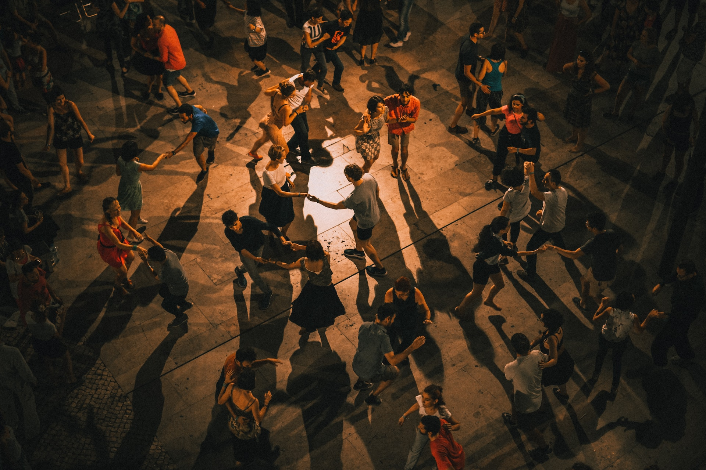
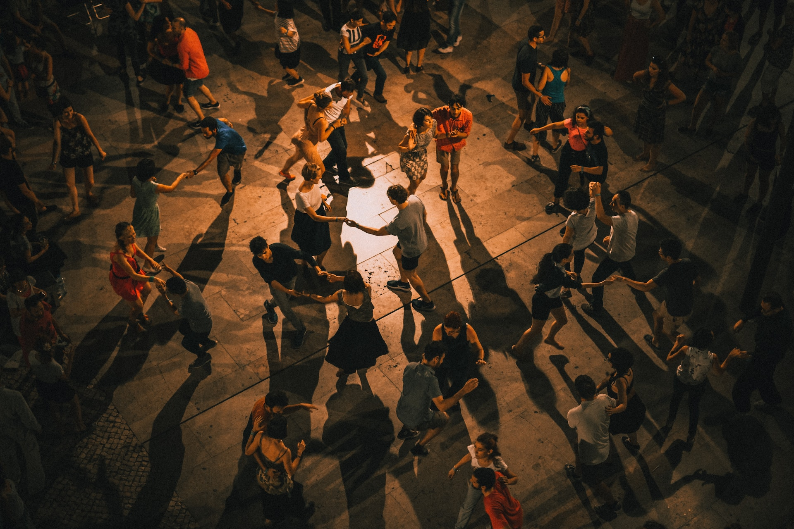

Lisbon for Latin
Dance Lovers

 

Outdoor Lisbon Dance Party
About
Lisbon is a lively city full of dance opportunities for those who love latin dances like salsa and bachata. This website gathers information on classes and parties so you can spend less time looking and more time grooving.

Classes
Whether you are a beginner or experienced, Lisbon offers many options to learn some new dance moves. Classes range from drop-in classes through Meetup to membership classes at dance studios. Below are some of the most popular options available.
Jazzy Dance Studios
A dance school for kids and adults with a large variety of group classes including salsa and bachata.
Locations:
- Santos
- Saldanha
- Entrecampos
- Parede
UDance
A dance school for kids and adults with a large variety of group classes including salsa and bachata.
Location:
- Santos
Two Left Feet
A meetup offering adults beginner salsa and bachata classes.
Locations:
- changes weekly

Parties
Ready to try those new moves on the dancefloor? On any given week, Lisbon throws several dance parties. They often include a class too.
| Day | Location | Music | Time | Class Included | Learn More |
|---|---|---|---|---|---|
| Tuesday | Dance Factory Studios | Bachata | 9pm-11pm | Yes, an intermediate bachata class starts at 7:30pm | On Meetup |
| Wednesday | BUS -Paragem Cultural | Cuban salsa, bachata, merengue | 9:30pm-12am | Yes, an open level salsa rueda class starts at 8:30pm | On Facebook |
| Friday | Top Floor | Salsa, bachata, kizomba, etc. | 11pm-6am | Yes, an open level class starts at 11pm | On Facebook |
| Friday | Ponto de Encontro, Cacilhias | Bachata | 9pm-11pm | Yes, an open level bachata class starts at 8pm | On Meetup |
|
Sunday [Every 2 Weeks] |
Jazzy Dance Studios, Santos location | Salsa, bachata, kizomba, urban kiz, semba | 6pm-11pm | Yes, an open level salsa or bachata class starts at 6pm | On Facebook |